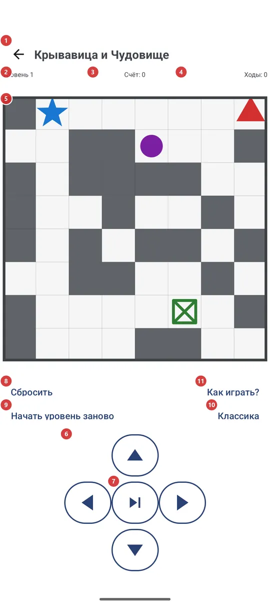
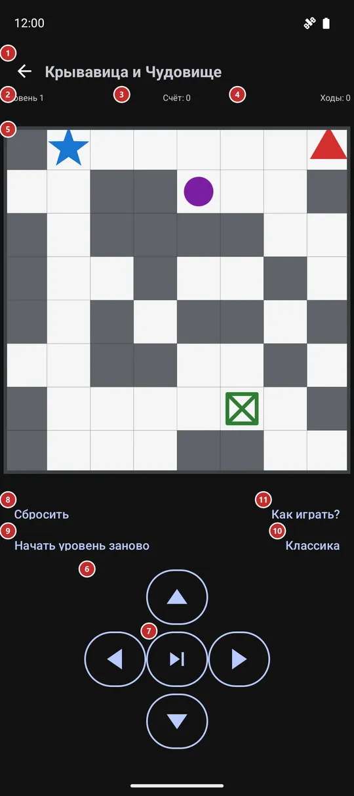

Крывавица и Чудовище
Для чего этот экран
Небольшая пошаговая головоломка на клетчатом поле. Проведите синее Чудовище к зелёному выходу, пока красная Крывавица и её фиолетовые помощницы не загнали вас в угол: вы ходите на одну клетку, после каждого хода двигаются враги, а каждый следующий уровень - поле побольше.


Порядок действий
- Откройте игру из меню программ, с панели программ, из лаунчера или виджетом на домашнем экране. После установки она выключена, поэтому сначала включите «Мини-игра» в «Настройках», на вкладке «Управление», в группе «Дополнительные программы и сценарии». Игра сама сохраняется и продолжается с того места, где вы остановились.
- В первый раз нажмите «Как играть?» 11: на отдельном экране показано, что означает каждый цвет на поле, и описаны правила.
- Ходите на одну клетку за ход по полю 5: проведите пальцем где угодно, коснитесь поля с той стороны от Чудовища, куда хотите пойти, нажмите треугольники 6 или используйте клавиатуру или D-pad. После каждого хода двигаются и враги.
- Толкайте серые стены в свободные клетки, чтобы расчистить путь. Если враг оказывается на вашей клетке или рядом с ней, уровень проигран.
- «Следующий ход» 7 пропускает ваш шаг, а враги всё равно ходят: так делают, когда стоять на месте безопаснее, чем идти.
- Выход приносит +1000, и следующий уровень начинается сам через секунду или сразу по «Следующий уровень» 8. «Уровень» 2, «Счёт» 3 и «Ходы» 4 ведут учёт над полем.
- Если уровень не удался, «Начать уровень заново» 9 запускает его снова на новом поле за 500 очков, а «Сбросить» 8 отбрасывает всю игру и начинает с уровня 1. «Режим игры» 10 меняет внешний вид поля.
Элементы
Верхняя строка и счётчики
1НазадВыходит из игры туда, откуда вы пришли.
Игра сохраняется после каждого хода, поэтому выход не теряет ваше место: когда вы откроете игру снова, она продолжится с тем же уровнем, счётом и ходами. Кнопка «Назад» на устройстве делает то же самое.
- Сочетание клавиш
- Esc
2УровеньПоказывает, на каком вы уровне.
Вы начинаете с уровня 1. С ростом уровня поле увеличивается - сначала 8 на 8 клеток, затем на клетку больше каждые три уровня, до 20 на 20 - и на нём появляется больше фиолетовых врагов.
3СчётВаши очки: ходы стоят, толчки и выход приносят.
Каждый ход стоит 10 очков, в том числе пропущенный. Толчок стены даёт +10, раздавленная фиолетовая помощница +50, а выход +1000. Счёт никогда не опускается ниже нуля. Повторный запуск уровня стоит 500 очков.
4ХодыСколько ходов вы сделали в этой игре.
Считаются и шаг, и пропущенный ход. Число растёт от уровня к уровню и обнуляется, только когда вы сбрасываете игру.
Поле и ходы
5Игровое полеИгровое поле: Чудовище, выход, враги и стены.
Синий - Чудовище, которым вы управляете, зелёный - выход, красный - Крывавица, идущая за вами, фиолетовые - её помощницы, которые бродят случайно, серые блоки - стены, которые можно толкать, а толстую рамку пересечь нельзя. Свайп в любую сторону или касание выше, ниже либо сбоку от Чудовища сдвигают его на одну клетку в эту сторону; касание точно по Чудовищу ничего не делает. Когда вас поймали, линия соединяет вас с врагом и появляется короткое сообщение.
6Кнопки-треугольникиЧетыре кнопки двигают Чудовище на одну клетку вверх, вниз, влево или вправо.
Они делают то же, что свайп или касание поля, и пригодятся, если вам удобнее кнопки или вы играете одной рукой. Ход в рамку или в стену, которую нельзя толкнуть, отклоняется и ничего не стоит. Работает и клавиатура: стрелки, W A S D или цифровой блок.
- Сочетание клавиш
- Arrow keys / W, A, S, D / Numpad 8, 4, 2, 6
7Следующий ходПозволяет врагам ходить, пока Чудовище стоит на месте.
Это считается ходом и стоит 10 очков, как шаг. Пользуйтесь, когда любой шаг приведёт вас к врагу, а ждать безопаснее.
Действия в игре
8СброситьЗапускает следующий шаг игры: новую игру, следующий уровень или повтор после поражения.
Надпись зависит от ситуации. Пока вы играете, написано «Сбросить», и кнопка начинает совсем новую игру с уровня 1, с нулевыми счётом и ходами, не спрашивая. После выхода написано «Следующий уровень», и кнопка переходит на следующее поле. Если вас поймали, написано «Начать уровень заново», и кнопка пробует тот же уровень ещё раз на новом поле.
- Отмена
- «Сбросить» выбрасывает уровень, счёт и ходы идущей игры, и вернуть их нельзя - только начать новую игру с уровня 1. «Начать уровень заново» после поражения стоит 500 очков.
- Сочетание клавиш
- Enter / Space / D-pad center
9Начать уровень зановоЗапускает текущий уровень заново на новом поле, если вы застряли.
Номер уровня остаётся, поле создаётся снова, а цена такая же, как за поражение: 500 очков, счёт не падает ниже нуля. Кнопка видна только пока идёт уровень; после поражения её название переходит к главной кнопке, и она делает то же самое.
- Отмена
- Текущее поле и 500 очков теряются, а прежнее поле не вернуть.
- Сочетание клавиш
- R
10Режим игрыМеняет внешний вид поля: «Классика», «Крывавица» или «На контрасте».
На кнопке написано название текущего режима. Нажмите её, чтобы открыть список «Режим игры» и выбрать другой. «Классика» рисует цветные шарики, «Крывавица» - фигуры: мужчину, женщину с автоматом, женщин с ножами, дверь, а «На контрасте» использует сплошные плитки в классических цветах. Меняется только вид: правила, ваша позиция и счёт остаются прежними. Выбор запоминается.
11Как играть?Открывает собственный экран помощи игры с легендой и правилами.
Экран называется «Как играть» и имеет свою кнопку «Назад». Он рассказывает о цели, показывает, что означает каждый цвет или фигура на поле (это зависит от выбранного режима), и перечисляет правила и счёт. Закройте его, чтобы вернуться в игру точно туда, где вы были.